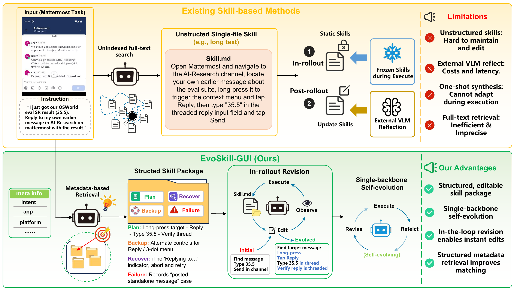
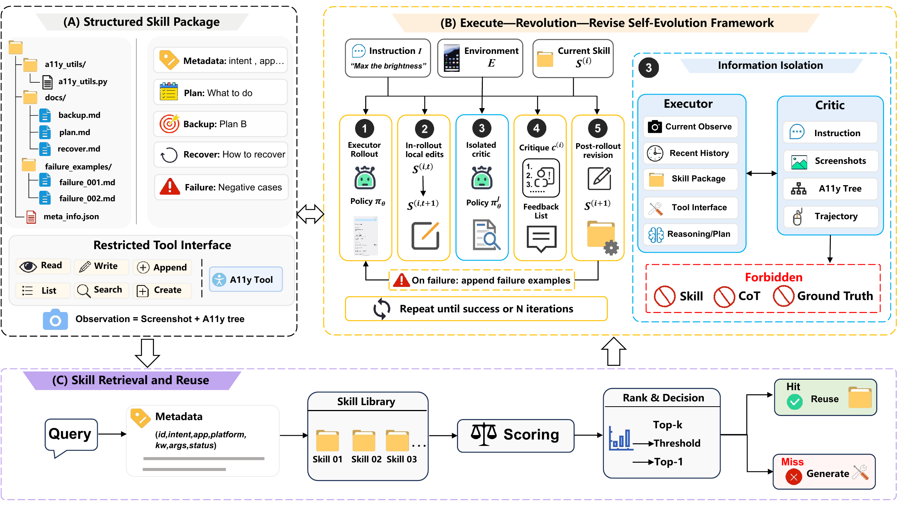
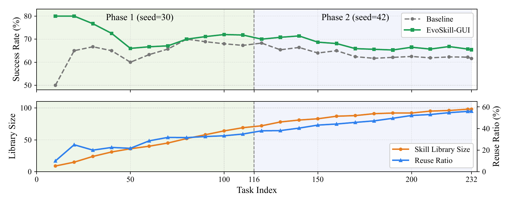
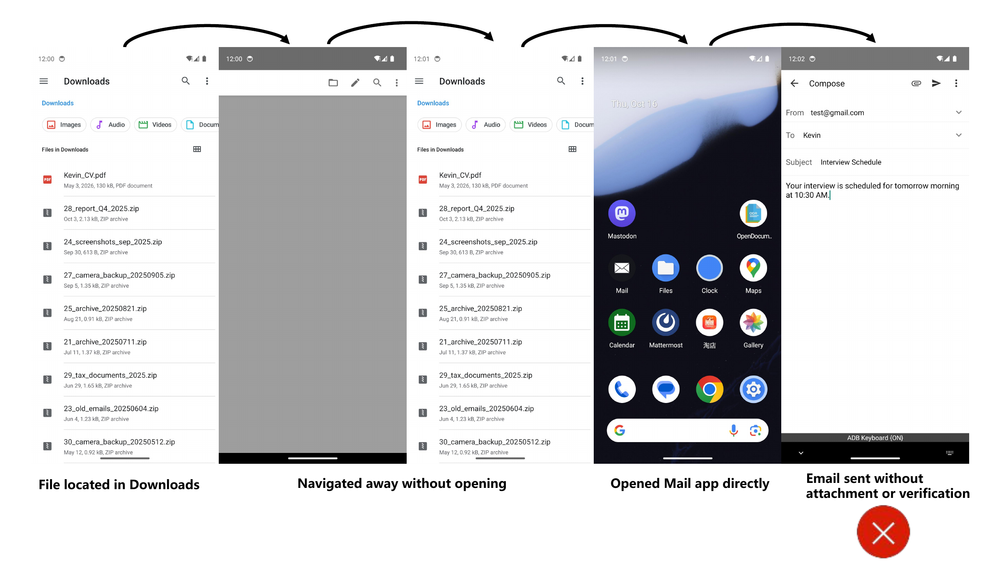
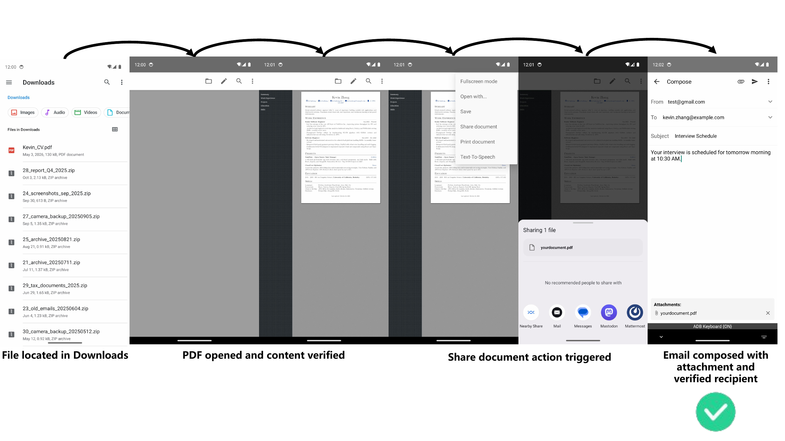
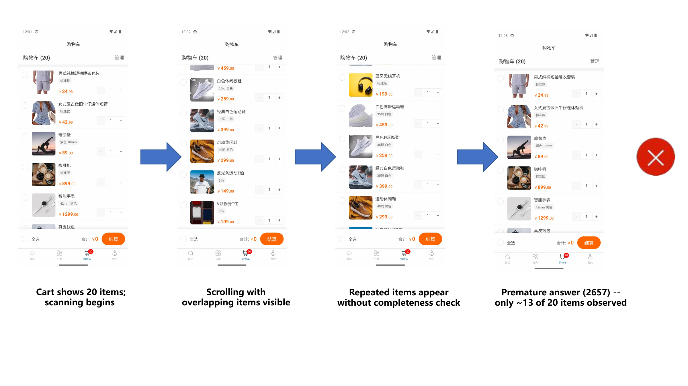
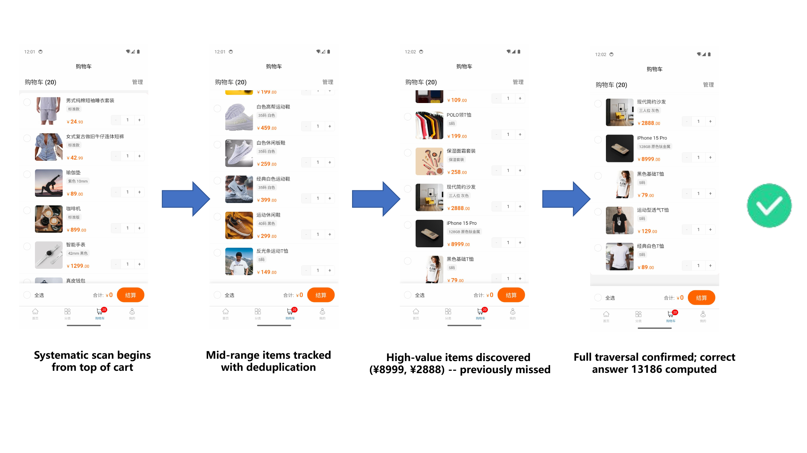

Reflect
Diagnose the executed trajectory under strict information isolation.
Diagnose the executed trajectory under strict information isolation.
Edit only the responsible file through a restricted tool interface.
Retrieve verified procedural knowledge for related future tasks.
MobileWorld
AndroidWorld
OSWorld
One backbone. No training.
Skills evolve directly from deployment-time feedback.
01 / Overview
GUI agents operate in non-stationary environments where pop-ups, delayed loads, and relocated widgets routinely invalidate plans fixed before execution.
Existing skill-based agents largely treat skills as static artifacts. EvoSkill-GUI instead represents every skill as a structured, editable package and turns failed execution into supervision for improving that package. During rollout, the executor can revise local mismatches instantly. After failure, the same backbone acts as an isolated critic, diagnoses the trajectory, and guides targeted skill-file edits.
Across MobileWorld, AndroidWorld, and OSWorld, EvoSkill-GUI consistently improves general-purpose and GUI-specialized models without additional training. The evolved library continues to benefit related tasks instead of rebuilding procedural knowledge from scratch.

02 / Method
EvoSkill-GUI alternates between in-rollout adaptation, information-isolated diagnosis, and targeted file revision. Successful packages return to a metadata-indexed skill library.

The executor follows the current package and performs instant revisions when the observed interface contradicts the plan.
tau(i) = Phi(S(i), E)
The same model inspects only the instruction, observations, and actions: no hidden reasoning, skill body, or ground truth.
Ccritic ∩ {S, CoT, GT} = ∅
Structured critique identifies the failure step, direct cause, and a concrete edit to the responsible skill component.
S(i+1) ~ pi(S(i), c(i), tau(i))
Metadata retrieval matches intent, app, platform, keywords, arguments, history, and verification status.
score(q, S) ≥ thetar
Inside a skill package
A monolithic skill entangles planning, localization, and recovery. EvoSkill-GUI separates them so each failure updates only what broke.
readwriteappendlistsearchcreate_failure{
"intent": "send email with attachment",
"app": "Gmail",
"platform": "Android",
"keywords": ["compose", "attach", "send"],
"status": "verified"
}03 / Results
All evaluations keep the package format and retrieval strategy fixed. Tasks receive up to 50 interaction steps and at most two post-failure revision rounds.
Every evaluated backbone improves on the GUI-only split, from general closed models to GUI-specialized open models.
Phase 1 constructs and evolves packages. In Phase 2, every task retrieves the evolved library built on related variants.
37.9% reuse rate
68.1 base → +2.6100% reuse rate
55.2 base → +6.0The same skill package design transfers to heterogeneous workflows across browsers, creative tools, office apps, email, media, and development environments.
| Backbone | Base | EvoSkill-GUI | Gain |
|---|---|---|---|
| GUI-Owl-1.5-8B | 46.7 | 54.8 | +8.1 |
| Qwen3-VL-8B-Instruct | 23.8 | 34.3 | +10.5 |
Largest application-level gain: +42.7 on VLC with GUI-Owl-1.5-8B.
04 / What the evolution learns
Most gains arrive within three rounds. Qwen3.6-Plus reaches 68.6% by Round 3 and 69.5% by Round 5.

Three-round EvoSkill-GUI
94.75M tokens for 69.5% accuracyInitially failed executions recovered
27 / 89 30.3% overall recovery rateOn 116 + 116 AndroidWorld tasks, the library reaches 98 skills and a 56.1% reuse ratio while maintaining higher cumulative success.

Structured files support targeted edits; instant revision prevents local mismatches from cascading; information isolation keeps critique evidence-grounded.
05 / Case studies
Case studies show how a package changes after execution feedback: missing verification steps become explicit checks, and premature stopping becomes complete traversal.
The failed skill stopped after finding the file. EvoSkill-GUI writes a verification checkpoint into plan.md so the executor confirms the attachment before sending.


The original procedure reported too early. The revised package adds an explicit completeness check before calculating and returning the top-three item total.


06 / Citation
The repository will host code, prompts, evaluation scripts, and evolving skill packages upon release.
View repository